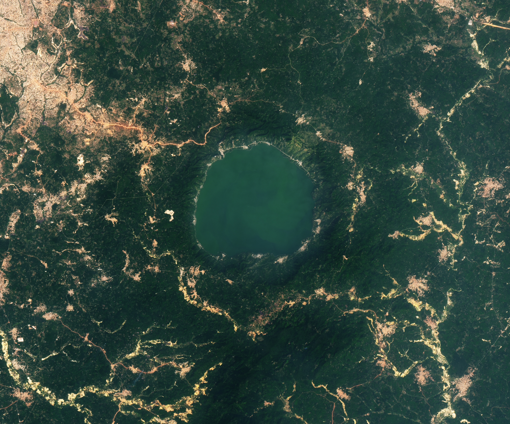

An Explosive Beginning for Lake Bosumtwi
Ghana, a West African nation of about 35 million people, has just one natural lake. Lake Bosumtwi, a bowl-shaped body of water southeast of the fast-growing city of Kumasi, spans 49 square kilometers (19 square miles) and plunges to a depth of 70 meters (240 feet).
In the myths of the local Asante people, the lake’s waters are considered sacred—a place where souls bid farewell to Earth before entering the afterlife. According to Asante mythology, the lake formed when a hunter named Akora Bompe chased a wounded antelope into a small, magical pond teeming with fish, causing the pond to swell rapidly into Lake Bosumtwi.
Modern-day geologists have a more fiery, explosive explanation for the lake’s origin. Scientific analysis shows that an asteroid about 1 kilometer (0.6 miles) wide slammed into the African rainforest just over 1 million years ago, leaving one of the youngest and best-preserved complex impact craters on Earth.
The energy released would have generated a massive shockwave, flattening forests and hurling tons of vaporized rock and debris around the crater. “A blinding flash of light and an immense fireball would have incinerated life for dozens of kilometers,” said Marian Selorm Sapah, a senior lecturer at the University of Ghana.
A similar impact in that same location today would result in the complete destruction of everything within a radius of several hundred kilometers, including major cities like Kumasi, according to Sapah. The volume of dust and aerosols injected into the upper atmosphere would also likely block enough sunlight to lead to an “impact winter” with long-term effects on agriculture.
Remote sensing analysis of the area around the lake shows that the debris settled into a distinctive raised, lobed pattern around the crater that resembles a splash, a feature reminiscent of a rampart. Rampart craters typically form in areas with large amounts of subsurface water or ice. The features are rare on Earth but prevalent on Mars and icy bodies of the outer solar system, such as Ganymede, Dione, Tethys, and Charon. The asteroid that formed Bosumtwi likely hit an area saturated with groundwater.
“Studying the structure and composition of Bosumtwi’s ejecta helps planetary scientists interpret remote sensing data from Mars and understand its hydrological history,” Sapah said.
Satellite-based analysis of Bosumtwi’s form shows that signs of the feature’s cataclysmic beginnings are still embedded in the landscape. These include a steep and well-preserved crater rim, the shape and composition of the debris field, the circular drainage pattern in the surrounding streams, and a concentric ridge around the crater.
Bosumtwi’s exotic geology has drawn attention to the crater for economic reasons as well. When the asteroid struck, the shockwave fractured the crust around the crater, creating an extensive network of faults and cracks that allowed hot fluids to circulate. The event helped concentrate gold and other minerals from a gold-bearing rock layer called the Birimian Supergroup near the surface and primed the area around the crater to become a target of small-scale gold mining, sometimes called galamsey locally.
The OLI (Operational Land Imager) on Landsat 8 captured this image of Bosumtwi (right) on December 21, 2024. The image on the left shows the same area in December 2015. These images, along with a separate analysis by remote sensing experts, show a marked expansion of mining, particularly southwest of the lake, as well as rapid expansion of farmland and villages around the lake in recent decades.
The greener water in 2024 is likely due to the lake having a higher concentration of some types of phytoplankton. Phytoplankton in the lake varies seasonally due to changing environmental conditions. Some research suggests that land use change near the lake may be contributing to increased loads of nutrients and making certain types of phytoplankton more abundant.
A team of NASA-funded scientists developed an app that uses Landsat images to track the expansion of gold mining in this region and helps distinguish between artisanal and industrial-scale mines. While industrial-scale mining typically occurs within large open pits, artisanal mining is usually more superficial; however, it often leaves swathes of deforested land and mercury-contaminated waterways. Most of the new mining seen around the lake was classified as artisanal.
The stark visual evidence of anthropogenic change juxtaposed with a million-year-old geological landmark is striking,” Sapah said. “The clear encroachment of settlements, agriculture, and mining activities right up to the lake’s steep crater rim is a testament to both the image resolution and the scale of the change.